Der u.a. Bericht zu dem Bamberger Schrein hat dazu geführt, dass ich mich mal wieder intensiver mit diesem wikingerzeitlichen Kunstwerk befasst habe. Dabei stieß ich über die Literaturliste in der Arbeit von Arnold Muhl - siehe unten - auf dieses Büchlein "Entstehung, Zweck und Einrichtung des Bayerischen Nationalmuseums in München, von J. H. von Hefner-Alteneck, Bamberg, 1890" das vor der Seite 5 diese alte Fotografie des Schreins wiedergibt.
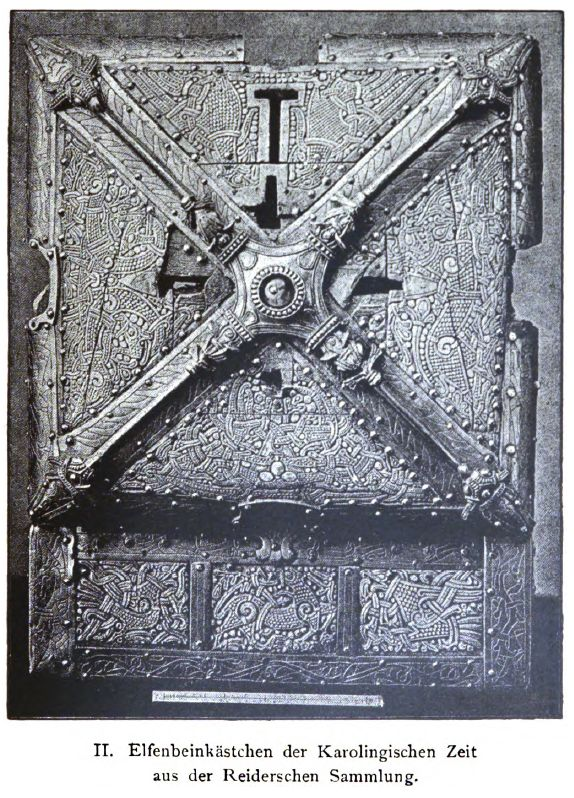
Bild - Lizenz: Public DomainDiese Ansicht mit dem aufgeklappten Deckel habe ich sonst auch noch nirgends gesehen. Der Autor Jakob Heinrich von Hefner-Alteneck (*20.05.1811 - 19.05.1903, Kunsthistoriker und Museumsdirektor),
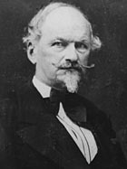
Bildquelle: Wikipedia - Lizenz: Public Domainder vom bayerischen König Ludwig II. zum 1. Juni 1868 zum Generalkonservator der Kunstdenkmäler Bayerns und zum Direktor des Bayerischen Nationalmuseums berufen worden war, zu dessen Entwicklung er wesentlich beigetragen hatte, trat 1886 in den Ruhestand. Als einer der letzten lebenden Zeitzeugen zur Entstehung des Museums hat er dann dieses Büchlein verfasst. Auf den Seiten 8 - 13 geht er dort auf die Person Joseph Martin von Reider (*30.08.1793 - 05.02.1862, Zeichenlehrer, Heimatforscher und Kunstsammler) ein, aus dessen Sammlung der Bamberger Schrein stammt, die 1860 von von Hefner-Alteneck für den Bayerischen Staat angekauft worden war.
16.02.2024
Auf der Webseite des "Bayerisches Nationalmuseum. Das Schatzhaus an der Eisbachwelle" wurde die Online Präsentation des sogenannten "Kunigundenkasten" offenbar neu arrangiert. Dort heißt es dann: "Um eines der prominentesten Werke der Wikingerkunst zu sehen, muss man nach München reisen. Dieses völlig singuläre Objekt wurde wohl als diplomatisches Geschenk für den Kaiser geschaffen. Es blieb erhalten, weil man es jahrhundertelang in einem Bamberger Kirchenschatz als Kasten der heiligen Kaiserin Kunigunde verehrte. Entstanden an der Wende zum Christentum sind hier heidnische und antike Motive verbunden mit einem Kreuz als Schmuck des Deckels. Die Ornamentik wirkt zunächst ganz abstrakt. Bei näherer Betrachtung lassen sich verschiedene Vögel und Raubtiere erahnen und sogar ein menschliches Gesicht. Der Kasten war ursprünglich mit einem komplizierten Schließmechanismus ausgestattet." Neben Inventarnummer, Maßangaben (H:13,3 cm / B: 25,7 cm) und Infos zum Erwerb finden sich auch Literaturhinweise, wobei meines Erachtens diese drei sehr gewichtigen Beiträge (noch) fehlen:
Staecker, Jörn - Enigma in Bildform. Die Decodierung des Bamberger und Camminer Schreins. Offa 65/66, 2008/09, 165-182
Muhl, Arnold - Der Bamberger und der Camminer Schrein. Zwei im Mammenstil verzierte Prunkkaestchen der Wikingerzeit - in: Offa 47, 1990, S. 241-336
(Nicht online verfügbar - habe ich mir bei der Bayerische Staatsbibliothek über "subito - Dokumente aus Bibliotheken e.V." in zwei Teilen (max. 100 Seiten pro Bestellung zulässig) gegen Gebühr - je ca. 7.- - als PDF-Dateien per E-Mail besorgt.)
Daneben wurde auf der Webseite des Bayerischen Nationalmuseums ein Foto des Bamberger Schreins in exzellenter Qualität eingestellt.

In diesem Online Auftritt kommt man über einen Link zu der Rubrik "Highlights" und (nur) dort sind noch zwei weitere tolle Fotos zu finden. Darunter ist - meines Wissens - erstmals auch ein Foto des geöffneten Kästchens. Das habe ich noch nie gesehen! Vielen DANK!


Die drei Fotos dürfen - unverändert - unter Wahrung der Lizenz "CC BY-NC-ND 4.0" genutzt werden. Tipp: Wenn man die Fotos über einen rechten Mausklick und dann "Grafik in neuem Tab öffnen" neu öffnet, kann man sie dann in sehr viel größerer Wiedergabe betrachten!
Im Museum wird das Objekt im Saal 9 in geschlossenem Zustand präsentiert. Zumindest war dies bei meinem letzte Besuch in dem Museum am 27.02.2019 noch so.
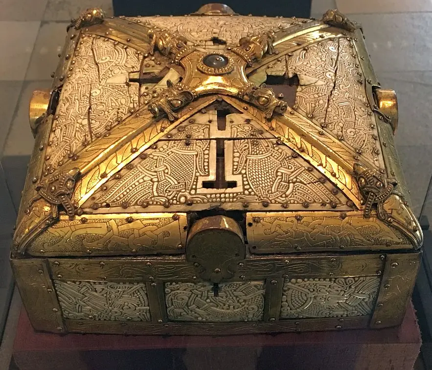
Bei einem München Tripp werde ich diesem Kleinod am Sonntag, 10. März 2024, mal wieder einen Besuch abstatten.
10.02.2024
Bei einem Internetstreifzug habe ich soeben diese - für mich neue - Webseite zur Aggersborg innerhalb des Internetauftritts von "Vesthimmerlands Museum" gefunden, die in dänischer Sprache (auch in Englisch verfügbar) einige Informationen - u.a. vier Drohnenflug Videos - zur Verfügung stellt.
09.02.2024
Der schwedische ESA Astronaut Marcus Wandt ist heute mit der Weltraummission Ax-3 zur Erde zurückgekehrt, nachdem er mit drei weiteren europäischen Astronauten am 18.01.2024 zur ISS gestartet war. Er hat auf der ISS für die ESA die Mission "Muninn" durchgeführt. Mit Andreas Mogensen (DK) und Marcus Wandt waren erstmals zwei Skandinavier gleichzeitig im Weltraum. Aufgrund seiner Rückkehr habe ich heute den u.a. Eintrag - siehe 26.08.2023 - angepasst.
07.02.2024
Heute habe ich im Internet erstmals über einen spektakulären wikingerzeitlichen Schwertfund von Anfang 2024 in Polen gelesen. Das Schwert wurde am 12. Januar 2024 bei Baggerarbeiten zur Vertiefung des Yachthafens des Sport- und Erholungszentrums in Włocławek, einer Stadt mit ca. 100.000 Einwohnern, gefunden.
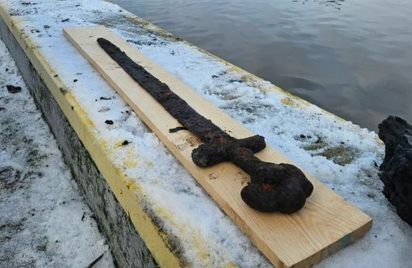
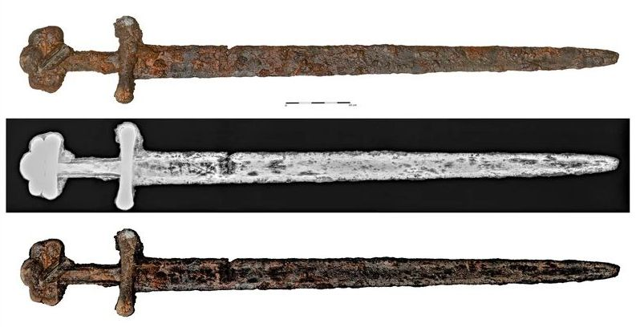
Bildquelle / Fotos von Olaf Popkiewicz vom Woiwodschaftsamt für Denkmalschutz in Toruń/Polen
Sławomir Mularski, der Besitzer einer Baufirma, entdeckte in einem Schlammhaufen, den er aus der Weichsel gegraben hatte, ein äußerst gut erhaltenes Schwert. Er benachrichtigte umgehend die Zweigstelle des Woiwodschaftsamtes für Denkmalschutz in Włocławek, die es zur Fachforschung an die Nikolaus-Kopernikus-Universität in Toruń, unter der Leitung von Dr. Ryszard Kaźmierczak, Abteilung für Antike und Frühmittelalter, Institut für Archäologie, übertrug. Es handelt sich offenbar um ein berühmtes Ulfberht-Schwert, denn auf der Klinge befindet sich wohl die entsprechende Inschrift "U[V]LFBERTH", die durch erste Röntgenscanneruntersuchungen erkannt wurde. Damit handelt es sich um die achte Waffe dieser Art, die im heutigen Polen gefunden wurde. Aber erst nach Reinigung und Konservierung wird es möglich sein, diese erste Hypothese über den Ursprung der Schwertklinge selbst zu bestätigen. Insgesamt sind bislang ca. 170 Exemplare dieser Art, hauptsächlich in Nordeuropa, entdeckt worden. Das Schwert steht nun vor einem langwierigen Prozess der Konservierung und wissenschaftlichen Untersuchung, der uns möglicherweise weitere Erkenntnisse über seine Konstruktion und Verzierung und damit auch über seine wunderbare Geschichte bringen wird.
Robert Grochowski, ein polnischer Archäologe, sagte der in Warschau ansässigen Zeitung Gazeta Wyborcza, dass diese Art von Schwertern, obwohl sie oft als "Wikingerschwerter" bezeichnet werden, technisch gesehen in Gebieten des heutigen Deutschlands hergestellt wurden und in ganz Europa weit verbreitet waren. Möglicherweise gelangten sie auf diesem Weg über Skandinavien nach Mitteleuropa, einschließlich Polen. "Ich weiß nicht, woher die Idee kommt, dass das Schwert einem Wikinger gehörte", sagte Grochowski in übersetzten Kommentaren. Er stellte klar, dass ein mit skandinavischen Mustern verziertes Schwert nicht unbedingt ein Wikingerschwert sein muss. Skandinavische Handwerker haben sie nur nach ihren eigenen Moden und Bedürfnissen gerahmt, erklärte er. "Ohne detaillierte Recherche ist die Annahme, dass es sich um ein Schwert eines Wikingers handelt, völlig ungerechtfertigt. Es ist schwierig, mehr zu sagen, als die Tatsache, dass es sich um ein frühmittelalterliches Schwert handelt."
Basierend auf dem Griff der Waffe klassifizierten Experten sie als Typ-S-Schwert (nach Jan Petersen - De norske Vikingesverd - 1919), das sich durch einen geraden Metallparierschutz auszeichnet, der sich zum Ende hin symmetrisch erweitert. Die Spitze des Knaufs (Griffs) des Schwertes hatte eine dreiteilige Kappe, ein Stil, der es Forschern ermöglichte, das Schwert auf das 9. oder 10. Jahrhundert zu datieren, also etwa in die Zeit, als der Staat der ersten Piasten-Dynastie als erste polnische Staatsform gegründet wurde.
Interessant ist auch der geografische und historische Kontext, in dem dieser Gegenstand gefunden wurde. Aufgrund früherer archäologischer und historischer Forschungen weiß man, dass die Geschichte von Włocławek sehr reich ist und viel weiter zurückreicht als die Tatsache, dass die Stadt im Jahr 1255 gegründet wurde. Vermutlich im 10. Jahrhundert, also in der Zeit, in die das entdeckte Objekt datiert wird, befand sich an dieser Stelle ein starkes Festungszentrum, verbunden mit der Furt an der Weichsel, durch die ein Handelsweg von Kujawien in die Gebiete von Dobrzyń und Chełmno verlief und weiter in Richtung Preußen. Vielleicht aufgrund der Lage an der Weichsel, die damals ein wichtiger Schifffahrtsweg gewesen sein muss, gab es dort auch einen Hafen, der diesen Ort mit den Gewässern und damit auch mit den Fernrouten der Ostsee in Richtung Skandinavien verband. Es sollte erwähnt werden, dass dies nicht das erste Objekt skandinavischer Herkunft ist, das in der Nähe von Włocławek entdeckt wurde und auf die Anfänge der polnischen Staatlichkeit zurückgeht. Im Jahr 2007, während den Arbeiten im Zusammenhang mit dem Bau der Autobahn A1, die Włocławek von Westen her umgeht, wurde in der Stadt Bodzia ein Friedhof aus dem 10. und 11. Jahrhundert mit mehreren Dutzend Kammergräbern aus der Zeit zwischen ca. 980 und ca. 1030 entdeckt. Bei den gut zwei Jahre dauernden Ausgrabungen wurden nicht allein die Überreste von 14 Männern, 21 Frauen und 14 Kinder gefunden, sondern auch außerordentlich reiche Grabbeigaben, wie Waffen, Schmuck, Münzen, Amulettbehälter und die Überreste von Seidenstoffen. Die vielen Objekte skandinavischen Ursprungs lassen die Vermutung zu, dass in dieser Nekropole Neuankömmlinge aus Skandinavien begraben wurden, die möglicherweise im Dienst der ersten Piastendynastie standen, die zu dieser Zeit in dieser Gegend ihren Staat gründete. Literaturhinweis - Bodzia: a new Viking Age cemetery with chamber graves / Bodzia: a new Viking Age cemetery with chamber graves - auszugsweise in Google Books.
26.01.2024
Ab heute - allerdings nur bis 25.02.2024 - kann man in der Mediathek des TV Senders ARTE den 88-minütigen Beitrag "Die Normannen - Herrscher von Sizilien" abrufen / anschauen.
Dazu passt auch noch der 18-minütige Video "Der Mantel Rogers II. - Die Sprache der Macht" aus der Reihe "Geschichte schreiben" von ARTE, der schon seit dem 16.09.2021 bis 25.08.2024 abrufbar ist.
Mit der kostenlosen Software "MediathekView" lassen sich diese Filme aber dankenswerterweise legal auf den Computer herunterladen. Dann kann man sie anschauen wann man will, immer und immer wieder. Danke den Machern dafür!
20.12.2023
Zur Abwechselung mal wieder ein ganz anderes Thema - der Gjellestad Schiffsfund in Norwegen. Von Sommer 2020 bis Spätherbst 2021 wurde es von Archäologen des Kulturhistorischen Museums in Oslo ausgegraben. Auf dieser Webseite kann man sich in norwegisch oder englisch über eine Animation zu dem spannenden Fund informieren. Eine 3D Darstellung des Schiffsgrabes kann man dort auch abrufen und intensiv studieren.
Über diesen Link kann man sich ein Foto vom Oktober 2023 der Baustelle des neuen "Wikingerzeitsmuseums" in Oslo anschauen. Die Neueröffnung des Anbaus, der dann eine dreifach vergrößerte Ausstellungsfläche bietet, ist aktuell für 2027 geplant. Das Projekt wird seitens der Architektengruppe hier publiziert. Das zuständige Ministerium hat hier einen Überblick im Angebot.
09.12.2023
Innerhalb der Webseite zu Jelling habe ich heute die Unterseite Nordhügel in Angriff genommen, wie ich zum 27. - 30.11.2023 bereits angekündigt hatte. Das wird aufgrund der immensen Fülle von Material ein Weilchen gehen.
06.12.2023
In der Mediathek des Fernsehprogramms ZDFinfo Doku fand ich heute gleich mehrere nagelneue Dokumentationen zur Thematik "Wikinger", von denen ich auf anderem Wege noch nichts gehört hatte.
Am 13.11.2023 wurde die 6-teilige Dokumentation "Vikings - Die wahre Geschichte" erstmals in Deutschland veröffentlicht - diese einzelnen Beiträge können dummerweise nur bis zum 28.12.2023 in Deutschland angeschaut werden:
1/6 - Aufstieg der Seekrieger - Das Jahr 793 gilt als Beginn der Wikinger-Ära: Nordmänner aus Skandinavien landen vor der britischen Insel Lindisfarne. Sie plündern das dortige Kloster, hinterlassen Tod und Zerstörung - 43 Minuten.
2/6 - Landung in England - Mit der Einnahme der florierenden Stadt York ändern die Wikinger im Jahr 866 ihre Strategie: Sie kommen nicht mehr nur zu Raubzügen auf die britische Insel - 43 Minuten.
3/6 - Handel bis nach Bagdad - Wikingerheere terrorisieren Ende des 8. Jahrhunderts weite Teile Englands. Ein anderer Zweig der Nordmänner bricht auf, um Konstantinopel und Bagdad zu erobern - 42 Minuten.
4/6 - Überfall auf Frankreich - Im Jahr 845 belagern die Wikinger zum ersten Mal Paris. Nach ihren Raubzügen auf den Britischen Inseln und ihren Vorstößen ins spätere Russland nehmen sie nun das Frankenreich ins Visier - 43 Minuten.
5/6 - Kurs auf Amerika - Die Wikinger sind die ersten Europäer, die den Norden Amerikas betreten, noch vor Christoph Kolumbus. Sie erhoffen sich ein besseres Leben als in ihrer Heimat Skandinavien - 44 Minuten.
6/6 - Untergang - Fast 300 Jahre lang prägen die Wikinger Europa. Bis heute finden sich ihre Spuren in England, Frankreich, im Ostseeraum - und sogar in Amerika. Doch dann verschwinden die gefürchteten Krieger - 44 Minuten.
Nachtrag 13.12.2023 - Inzwischen habe ich alle sechs Folgen angeschaut. Für mein Empfinden tatsächlich die bislang beste Dokumentation zur Geschichte der rund dreihundertjährigen Wikingerexpansion. Alle aufkommenden Fragen werden durch etliche Fachleute, die aus verschienenen Ländern / Disziplinen kommen, aus unterschiedlichen Blickwinkeln beleuchtet, um dann fundiert und allgemeinverständlich beantwortet zu werden. Verwundert hat mich nur, dass Harald Blauzahn zwar häufig angeführt wurde, es aber keine Ansicht von einer seiner fünf Ringburgen, keine Ansicht zu den Jelling Monumenten und kein Bildnis zu seinem großen Runenstein in den Beiträgen gab.
Außerdem wird in der Mediathek von ZDFinfo Doku seit dem 04.12.2023 noch dieser 44-minütige Einzelbeitrag "Die Wikinger vor Paris" in der Reihe "Entscheidung auf dem Schlachtfeld" angeboten. Das Video ist bis hier sogar bis zum 03.12.2026 verfügbar.
Mit der kostenlosen Software "MediathekView" lassen sich diese Filme aber dankenswerterweise legal auf den Computer herunterladen. Dann kann man sie anschauen wann man will, immer und immer wieder. Danke den Machern dafür!
27. - 30.11.2023
Innerhalb der Webseite zu Jelling habe ich heute die Unterseite Suedhügel in Angriff genommen, die bisher ein stiefmütterliches Dasein führte. Nur wenig Text, keine Fotos / Abbildungen / Verlinkungen usw. Das soll sich ändern, wird aber aufgrund des Umfangs an Material nicht an einem Tag zu machen sein. Dann geht es noch an den Nordhügel, dem es bislang nicht besser erging und zu dem es dazu noch sehr viel mehr Informationen gibt.
20.11.2023
Nun habe ich zu Jelling 1 ebenfalls einiges an Ergänzungen eingearbeitet, die auch bei diesem Runenstein i. S. Bemühungen zum Schutz vor Steinschäden über die Jahrhunderte, technische Untersuchungen zu bereits eingetretenen Steinschäden, usw. gefehlt haben.Während dieser Ausarbeitung fand ich gerade im Internet noch diese beiden (neuen) Beiträge zu Jelling:
17-teilige, u.a. auch deutschsprachige Bilderfolge zu den Entdeckungsmöglichkeiten rund um die Jelling Monumenten. Außerdem gibt es darüber auch zahlreiche Drohnenvideos mit Downloadoptionen und vieles mehr. Zwei dieser Videos habe ich auf meiner Web-Unterseite zur Jelling Kirche eingebunden.
Lisbeth M. Imer (*1973, Runologin am Nationalmuseum Kopenhagen) besucht die Runensteine Jelling 2 und Læborg und berichtet in über ihre neuesten Forschungen zu dem Runenmeister "Ravnunge-Tue", der diese beiden Runensteine geschaffen hat. Dazu habe ich ich bereits mehrfach unten berichtet.
19.11.2023
Heute habe ich doch noch mal zu dem Runenstein von Jelling 2 einiges an Nachträgen eingearbeitet, die mir noch zu den Themen Forschungen zum ursprünglichen Standort, Bemühungen zum Schutz vor Steinschäden über die Jahrhunderte, technische Untersuchungen zu bereits eingetretenen Steinschäden, usw. eingefallen sind.13.11.2023
Falls jemand in der dunklen, kühlen Jahreszeit einen Besuch des Haithabu Museums angedacht hatte - Auszug aus deren Homepage:
Winterpause für Ausstellungshaus und Freigelände: Das Wikinger Museum Haithabu (Ausstellungshaus UND Freigelände) ist vom 1.11.2023 bis zum 22.3.2024 geschlossen. Während das Freigelände immer eine Winterpause einlegt, so gibt es im Ausstellungshaus umfangreiche Sanierungsarbeiten. Auch während der Schließung wird es jedoch ausgewählte Veranstaltungen geben, an denen Sie teilnehmen können. Eine Übersicht über das stets aktualisierte Programm finden Sie HIER
12.11.2023
Immer wieder finde ich im Internet Informationen zu Geschehnissen in Dänemark von denen ich noch keine Kenntnis hatte, die aber eigentlich schon Jahre zurück liegen. So war es auch heute, als ich plötzlich auf einen Bericht zu dem Schatzfund von Damhus aus dem Jahr 2018 stieß.
Es fanden sich im August / Oktober 2018 auf einem Feld bei Ribe-Damhus insgesamt 252 teils neuwertige, glänzende Silbermünzen. Sie lagen in einem ovalen Feld von 50 x 15 m verstreut, was darauf hindeutet, dass sie beim Pflügen verteilt wurden und zuvor vermutlich in einem Lederbeutel dicht unter der Erdoberfläche lagen.
Dieser Hort ist ein völlig neuer und bedeutender Beitrag zur Münzgeschichte des 8. Jahrhunderts. Da Münzen vom König ausgegeben wurden, erzählen die Münzen auch von der königlichen Macht, den Konjunkturzyklen und der Wirtschaftspolitik. Zu dieser Zeit herrschten in Dänemark der mächtige König Gudfred und seine Söhne, und sie müssen die Herausgeber der Münzen gewesen sein. Wir können sehen, dass alle Münzen ganz und nicht in Stücke gebrochen oder durchbohrt sind. Dies zeigt, dass sie in einer tatsächlichen Münzwirtschaft verwendet wurden, wie wir heute Geld verwenden, und nicht in einer Gewichtswirtschaft. Man weiß ja bereits, dass es auf dem Königsmarkt in Ribe eine Münzwirtschaft gab, also passt alles wunderbar zusammen. Weitere Infos dazu unter Ribe.


10.11.2023
Im Zusammenhang mit den erwähnten Forschungen von Lisbeth M. Imer (*1973, Runologin am Nationalmuseum Kopenhagen), Laila Kitzler Åhfeldt (*1969, Wissenschaftlerin am Swedish National Heritage Board in Stockholm) und Henrik Zedig zu den dänischen Runensteinen von Jelling 2, Læborg, Bække 1 und Klebæk Høje findet sich im Internet seit dem 27.09.2023 eine zweiteilige Doku des dänischen TV Senders "DR" mit dem Titel Gåden om Thyra (Das Rätsel um Thyra) mit Cecilie Nielsen (*12.02.1987, Historikerin und TV-Moderatorin). Der erste Teil (28 Minuten) mit dem Titel "Runernes hemmelighed" (Das Geheimnis der Runen) beschäftigt sich mit Thyra und eben diesem völlig neuen Forschungsergebnis, das Imer/ Kitzler Åhfeldt/Zedig mit Hilfe der Laserscanner 3D-Technologie erzielt haben (Abrufbar bis 27. September 2025). In dem zweiten Teil (29 Minuten) mit dem Titel "Knoglerne under kirken" (Die Knochen unter der Kirche) untersucht Cecilie Nielsen die Ausgrabungen unter der Jelling-Kirche, wo die Knochen von
Obwohl in den Beiträgen die Sprache zwischen Dänisch, Schwedisch und Norwegisch häufig hin und her wechselt, kann einem durch die dänischen Untertitel und insbesondere die (bewegten) tollen Bilder schon klar werden, worum es geht. Zahlreiche Forscher kommen neben Lisbeth M. Imer und Laila Kitzler Åhfeldt zu Wort, nämlich Kristel Zilmer (*1974, Professorin an der Uni in Oslo - Spezialisierung auf Runologie und altnordische Philologie) / Søren Sindbæk (*28.01.1975, Archäologe, Professor an der Uni Aarhus) / Anne Pedersen (Kuratorin am Nationalmuseum Kopenhagen) / Mads Dengsø Jessen (Archäologe , Nationalmuseum Kopenhagen) / Laurine Albris (Archäologin am Nationalmuseum Kopenhagen) / Adam Bak (Archäologe und seit 2015 Kurator von Kongernes Jelling) / Kasper Holgaard Andersen (*1980, Historiker, Moesgaard Museum) / Marie Louise Schjellerup Jørkov (Dozentin / Leiterin des anthropologischen Labors der Uni Kopenhagen) sowie Lars Grundvad (Archäologe, Museumsinspektor Museum Sønderskov). Der sieht den Goldschatz von Fæsted - in Südjütland, ca. 65 km sw von Jelling - der 2016 gefunden wurde - Übersicht siehe unten - und ein Gewicht von ca. 1,5 kg Gold und ca. 130 g Silber hat, aufgrund des Fundortes, des Stils und der Größe im Umfeld von
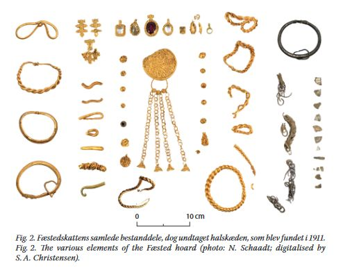
Bildquelle: Artikel "Fæstedskatten oprindelsen" von Lars Grundvad in Arkæeologi i Slesvig / Archäologie in Schleswig 19 2022 - S. 315 - abgerufen 10.11.2023
Die drei Personen, die diesen Schatz mit ihren Metalldetektoren gefunden hatten bekamen übrigens vom Nationalmuseum Kopenhagen einen Finderlohn von knapp 150.000,00 ausbezahlt!
Tipp: Man kann auch die App "Microsoft Translator" (oder was vergleichbares) am Smartphone aufrufen und neben dran legen, und sich das gesprochene Wort der beiden Filme simultan übersetzen zu lassen. Funktioniert tatsächlich einigermaßen, aber man hat das TV-Bild darüber natürlich nicht mehr richtig im Blick.
06.11.2023
Nach der Veröffentlichung des Artikels von Lisbeth M. Imer (*1973, Runologin am Nationalmuseum Kopenhagen), Laila Kitzler Åhfeldt (*1969, Wissenschaftlerin am Swedish National Heritage Board in Stockholm) und Henrik Zedig mit dem Titel ""A lady of leadership: 3D-scanning of runestones in search of Queen Thyra and the Jelling Dynasty" - siehe 02.11.2023 - beschäftige ich mich erneut ausführlich mit den Runensteinen von Jelling 1, Jelling 2, Læborg, Bække 1 und Horne die wohl alle zu Ehren von Thyra errichtet wurden und der dazu zugänglichen Literatur. Außerdem gehört der Runenstein in der Schiffssetzung von Klebæk Høje (Bække 2) noch zu diesem Umfeld.
In ihrem 2000 erschienenen Buch mit dem Titel "Sawyer, Birgit - The Viking-age rune-stones: custom and commemoration in early medieval Scandinavia - bringt Birgit Sawyer (*02.04.1945 - 07.05.2016, schwedische Historikerin) ab der S. 158 ff. einen Excursus - The tug-of-war over Thyre. Darin plädiert sie für ein radikales Umdenken in Bezug auf die Inschriften der Runensteine im Umkreis von Jelling.
Birgit Sawyer erklärte danach mehrfach, so z.B. in ihrem Artikel "Thyre in Jelling, Læborg und Bække" in dem Buch "Die Deutschen und das Europäische Mittelalter - Die Welt der Wikinger - 2002 - S. 376 ff.", dass es nach ihren Überlegungen am plausibelsten sei, dass Ravnunga-Tue der 2. Ehemann von Thyra (nach ihrer ersten Ehe mit
Dieser These von Birgit Sawyer folgt meines Wissens in der aktuellen Runen-Forschung niemand!
Übrigens wurde nach Thyra auch ein Asteroid benannt, der am 06.08.1871 durch den US-amerikanischen Astronomen James Craig Watson entdeckt wurde!
05.11.2023
Bei dem schlechten Wetter heute, habe ich Zeit gefunden einige Internetrecherchen durchzuführen. Dabei stieß ich auf diese Meldung vom 03.01.2023 von Lisa Lamm von National Geographic mit dem Titel "Wikingerhalle aus der Zeit von König Blauzahn entdeckt". Darin heißt es u.a. : "So auch aktuell in Hune, einem kleinen Dorf in Nordjütland. Dort entdeckten Archäologinnen und Archäologen eine große Wikinger-Halle aus der Zeit von Harald Blauzahn, einem dänischen Wikingerkönig, der Ende des zehnten Jahrhunderts n. Chr. neben Dänemark auch Norwegen regierte."

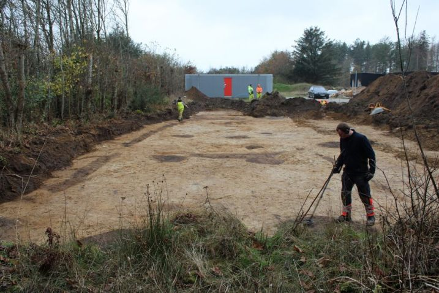
Fotos von Nordjyske Museer
Meine ergänzenden Recherchen erbrachten noch diese Informationen zu dem Fund.
Bei Wohnungsbauarbeiten Ende Dezember 2022 in der Nähe von Hune, einem Dorf in der Gemeinde Jammerbugt in Nordjütland wurde eine große Halle aus der Regierungszeit von König Harald Blauzahn freigelegt. Die Halle war bis zu 40 Meter lang und 810 Meter breit, wobei 1012 Eichenpfosten das Dach stützten. Sie haben einen rechteckigen Querschnitt und messen bis zu 90×50 cm. Der Saal diente wahrscheinlich als wichtiger Ort für politische Versammlungen, zur Beherbergung von Besuchern und als Mittelpunkt sozialer Aktivitäten im gesellschaftlichen Leben der Gemeinde. Die Halle, die bisher nur teilweise ausgegraben wurde, ist schon jetzt eine Sensation. Dies ist der größte wikingerzeitliche Fund dieser Art seit mehr als zehn Jahren, sagte Thomas Rune Knudsen, Grabungsleiter und Archäologe vom Historischen Museum von Nordjütland. Wir haben so etwas hier in Nordjütland noch nicht gesehen. Doch wem gehörte das besondere Gebäude? Bei der Beantwortung dieser Frage könnte ein Runenstein helfen, der in der Nähe der Halle gefunden wurde und aus derselben Zeit wie die Halle stammt. Die Inschrift des Steines Hove, Thorkil (und) Thorbiorn setzten den Stein Runulfs des Ratsweisen, ihres Vaters gibt laut Knudsen zumindest einen Hinweis darauf, welche Familie die Region zu der Zeit bewohnte, in der auch die Halle gebaut wurde. Der Runenstein wird in die Zeit von 970 - 1020 datiert.
 Der
Digitalen Sammlung des Nationalmuseums Kopenhagen entlehnt -
Lizenz:
CC-BY-SA - Foto: Roberto Fortuna
Der
Digitalen Sammlung des Nationalmuseums Kopenhagen entlehnt -
Lizenz:
CC-BY-SA - Foto: Roberto Fortuna
Dass das große Gebäude der Familie eines Ratsherrn gehört haben könnte, würde auch sonst passen. Der Runenstein und die Halle repräsentieren dieselbe Gesellschaftsschicht und gehören beide zur Elite der Gesellschaft, so Knudsen. Ganz sicher könne man die Halle der Familie allerdings noch nicht zuordnen. Und auch über Runulf selbst wisse man noch wenig er sei aber dennoch eine Person, die geschichtlich von großem Interesse sein könnte. Er ist jemand, der in der Wikingerzeit zur gesellschaftlichen Elite gehörte und jemand, der mit Sicherheit den damaligen König getroffen haben könnte, vielleicht sogar in der Halle in Hune, so Knudsen.
Weitere Hinweise erhofft sich das Team durch die Freilegung zusätzlicher Gebäude in der Nähe. Ein Hallengebäude dieser Art steht selten allein, sagt der Archäologe. Denn gerade die Region Nordjütland sei zur Zeit der Wikinger ein besonderer Teil des Landes gewesen. Am Limfjord, der sich dort befindet, sammelte sich die Wikingerflotte, bevor sie sich auf Raubzüge und Reisen nach England und anderswo begab, so Knudsen. Durch weitere Funde kann dann vielleicht auch beantwortet werden, wer zu den Versammlungen in der Wikingerhalle lud und ob König Harald dort ebenfalls zu Gast war.
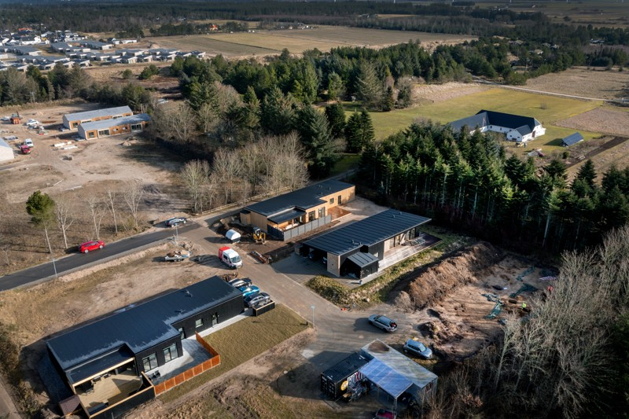
Bildquelle - Grundstück rechts unten, die Person mit der gelben Jacke könnte Thomas Rune Knudsen bei der Arbeit sein.Zugehöriger Text: Vikingehallen, der er kommet til syne, er op mod 40 meter og 8-10 meter bred. Det er dog kun halvdelen, der er blevet udgravet. Den resterende del strækker sig ind over skovarealet mod øst. Foto: Torben Hansen - abgerufen 06.11.2023
Übersetzung: Die zutage geförderte Wikingerhalle ist bis zu 40 Meter lang und 8-10 Meter breit. Allerdings wurde nur die Hälfte ausgegraben. Der restliche Teil erstreckt sich über das Waldgebiet im Osten.
Über dieses Foto konnte ich die Örtlichkeit in GoogleMaps und Skråfoto, das zum "Styrelsen for Dataforsyning og Infrastruktur" gehört, in Hune lokalisieren. Das Grundstück liegt im Stenmarksvej, etwa 65 m nordöstlich von der Hausnummer 25 gelegen, Luftlinie zur Kirche mit dem Runenstein ca. 1km. Skråfoto ist eine Webanwendung, die von der Dänische Agentur für Datenversorgung und Infrastruktur weltweit kostenlos bereitgestellt wird - frei von Urheberrechten.
04.11.2023
Heute habe ich Ergänzungen zu Fyrkat eingefügt, die längst überfällig waren. Schon im Herbst 2022 fanden Mitglieder der Nordjysk Detektorforening nämlich eine Reihe von Silbermünzen auf einem Feld bei Bramslev nordöstlich von Hobro ca. acht Kilometer von der Wikingerburg Fyrkat entfernt. Es stellte sich heraus, dass sie von zwei Wikingerschätzen stammten. Die Schätze können unter anderem anhand der unter Harald Blauzahn geprägten Münzen in die 980er Jahre datiert werden die gleiche Zeit, in der er nicht weit entfernt Fyrkat baute. Ausgrabungen vor Ort fanden im Frühjahr 2023 und nochmals im Herbst 2023 statt.
Die beiden Schätze wurden im selben Feld, weniger als 50 Meter voneinander entfernt, gefunden und enthalten beide eine große Anzahl kleiner Silbermünzen und zerschnittenen Silberschmuck, der vermutlich als Zahlungsmittel nach Gewicht diente, sog. Hacksilber. Insgesamt umfassen die beiden Schätze ca. 300 Silberstücke, davon etwa 50 ganze Münzen, darunter etliche dänische, deutsche und arabische Münzen.


Bildquelle: Bramslevskattene im Aalborg Historiske Museum - Foto: Nordjyske Museer - aufgerufen 04.11.2023
02.11.2023
Bei einem Internet Streifzug habe ich soeben diesen Artikel "A lady of leadership: 3D-scanning of runestones in search of Queen Thyra and the Jelling Dynasty" von Lisbeth M. Imer (*1973, Runologin am Nationalmuseum Kopenhagen), Laila Kitzler Åhfeldt (*1969, Wissenschaftlerin am Swedish National Heritage Board in Stockholm) und Henrik Zedig entdeckt. Er wurde offenbar erst am 11.10.2023 veröffentlicht. Die Autoren verwendeten 3D-Scanning, um Runenschnitztechniken zu untersuchen, kombiniert mit Analysen der Rechtschreibung und Sprache, und kommen zu dem Schluss, dass der Stein Jelling 2 und der Stein von Læborg durch die Hand des Schnitzers Ravnunge-Tue entstanden sind. Die Ergebnisse legen nahe, dass Thyra eine entscheidende Rolle bei der Entstehung des dänischen Staates spielte.
In dem Artikel heißt es übersetzt: "...Alle Analysen weisen in die gleiche Richtung und legen nahe, dass Ravnunge-Tue die Steine Læborg und Jelling 2 geschnitzt hat, während die Steine Horne, Bække 1 und möglicherweise Randbøl von einer anderen Hand geschnitzt wurden. Bække 2 ist ein Ausreißer und die Analysen deuten darauf hin, dass es von einem unerfahrenen Handwerker geschnitzt wurde. Die Oberfläche von Jelling 1 ist zu beschädigt, als dass wir mit unserer Rillenanalyse sichere Schlussfolgerungen ziehen könnten. Indem wir den Læborg-Stein mit dem Jelling-Komplex in Verbindung bringen, legt unsere Untersuchung nahe, dass die auf Bække 1 erwähnte und auf dem Læborg-Stein und beiden Jelling-Steinen erwähnte Thyra dieselbe Person ist. Die Erwähnung von Thyra auf nicht weniger als vier Runensteinen ist im Dänemark der Wikingerzeit beispiellos. Im Vergleich dazu ist es bemerkenswert, dass
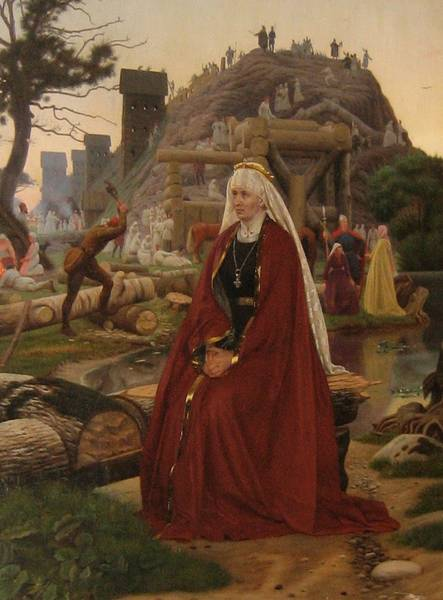
Thyra Danebod am Danewerk - Ölgemälde von Christen Dalsgaard, 1869
Bildquelle: Jellingprojektet
Zu dem Forschungsergebnis wurde auch von Lisa Lamm für National Geographic am 30.10.2023 ein deutschsprachiger Artikel mit dem Titel "Runensteine von Jelling: Wie viel Macht hatte Wikingerkönigin Thyra? verfasst. Darin wird Lisbeth M. Imer mit den Worten zitiert: "Die Tatsache, dass wir jetzt den Namen des Runenschnitzers der Steine von Jelling kennen, ist unglaublich; aber was die Entdeckung noch erstaunlicher macht, ist die Tatsache, dass wir wissen, wer die Chefin von Ravnunge-Tue war." - und weiter - Sie stammte wahrscheinlich aus einer edleren, älteren Familie als
01.11.2023
Nachtrag zu 99 - Ferslev / Seeland - Screenshot vom 31.10.2023 - von Skråfoto, das zum "Styrelsen for Dataforsyning og Infrastruktur" gehört. Skråfoto ist eine Webanwendung, die von der Dänische Agentur für Datenversorgung und Infrastruktur weltweit kostenlos bereitgestellt wird - frei von Urheberrechten. Die Aufnahmen werden alle zwei Jahre erneuert und neben einer Senkrechtaufnahme wird ein Schrägbild aus jeder Himmelsrichtung angeboten, das man über eine Adresssuche aufrufen kann. Also gibt man in diesem Fall "Egebjergvej 1, 4050 Skibby" in die Suchleiste ein, worüber der benachbarte Hof mit dieser Adresse eingeblendet wird. Die Schiffssetzung - hier die aktuellste Aufnahme vom 12.05.2023 - liegt dann leicht sw davon.

30.10.2023
Hier aktuelle Luftbilder der Schiffssetzungen von Dyndved und von der Schiffssetzung von Stolbro Næs auf der Insel Alsen. Beide wurden am 09.04.2023 aufgenommen und sind von Skråfoto - Screenshots vom 30.10.2023 - das zum "Styrelsen for Dataforsyning og Infrastruktur" gehört. Skråfoto ist eine Webanwendung, die von der Dänische Agentur für Datenversorgung und Infrastruktur weltweit kostenlos bereitgestellt wird - frei von Urheberrechten. Die Aufnahmen werden alle zwei Jahre erneuert und neben einer Senkrechtaufnahme wird ein Schrägbild aus jeder Himmelsrichtung angeboten.
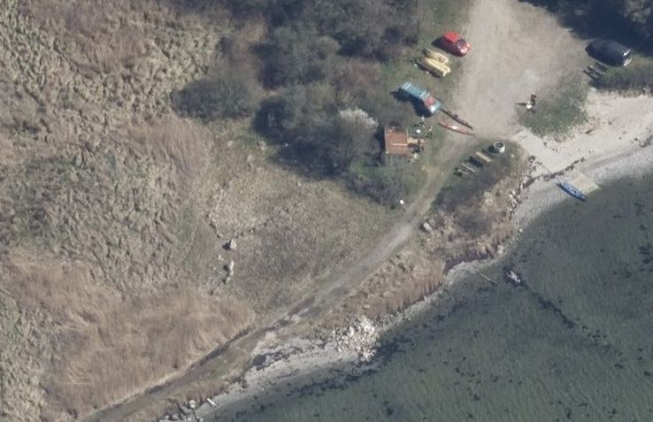

21. - 29.10.2023
Die Tage habe ich mal wieder an der Webseite von Jelling gearbeitet. Da steht nämlich immer noch einiges aus. Die Unterseite zur Kirche bedurfte einer grundlegenden Erneuerung und der Einarbeitung von Bildmaterial das bisher eigentlich fehlte.
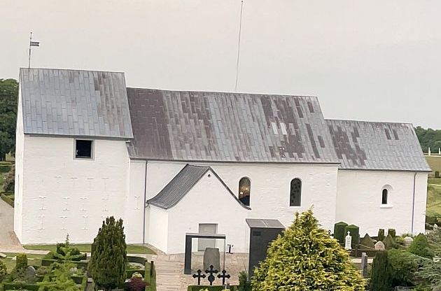
20.10.2023
Wieder ein Zufallsfund im Internet gelang mir heute auf YouTube mit diesem Drohnenvideo von Jelling (16:51 Minuten) von Air Pixma Media mit dem Titel "Jelling From Above - Viking Mounds - Kings - Gorm - Harald Bluetooth . 4K Drone - 2023 Denmark" das im August 2023 aufgenommen wurde. Darüber konnte ich jetzt erstmals das vierte, kleinere Haus, dessen Grundriss aus weißen Betonplatten wohl ab Juni 2023 in der n-ö Ecke der Palisade gelegt wurde, sehen. Außerdem sieht man die neu angelegten Grundrisse der drei anderen Häuser - siehe Beitrag unten vom 06./07.08.2023 mit Ergänzung vom 23.09.2023 - und die Fortschritte in Bezug auf die Erweiterung der Palisadenreihe an der westlichen Seite. Tolle Aufnahmen von den Jelling Monumenten in beeindruckender Qualität - DANKE! Der Drohnenpilot hat außerdem in seinem Kanal etliche weitere tolle Drohenvideos - vorwiegend von dänischen Städten - eingestellt.
16.10.2023
Heute kam mir zufällig etwas über Nonnebakken in die Hände, worüber ich diese Webseite mit Ergänzungen zu den bisherigen Funden (in den Jahren 1775, 1889, 1901, 1909, 2015) versehen habe. So wurde z.B. im Jahr 2015 über eine Begehung mit einem Metalldetektor eine tolle Brosche bei Nonnebakken gefunden. Auf der Vorderseite ist rechts eine stehende Schildmaid und links eine Walküre auf einem Pferd zu sehen. Unterhalb des Pferdes befindet sich ein rechteckiger Wandteppich, der aus den Eingeweiden gefallener Krieger gewebt ist.

Quelle: New archaeological investigations at Nonnebakken, a Viking Age fortress in Odense - Mads Runge - in: The fortified viking age, Odense 2017 - S. 54 - abgerufen 16.10.2023.
15.10.2023
In den letzten Tagen habe ich eigentlich immer noch mit dem Goldschatz von Hiddensee zu tun, dem ich unten mit Datum vom 13.09.2023 etliche Zeilen gewidmet habe, die es aber über aktuelle Recherchen im Internet immer wieder zu erweitern gilt.
Gerade bin ich bei einem Streifzug im Internet auf diese tolle norwegische Webseite "Unimusportalen" gestoßen, die Berichte mit extrem hochauflösenden Fotos von etlichen Fundstücken - Drei Tierkopfpfosten und der Buddha Eimer aus dem Oseberg Grab, hölzerne Kirchenportale einiger Stabkirchen, Helme, wikingerzeitliche Schwerter, zahlreiche Münzen aus verschiedenen Epochen, Perlen u.a. - präsentiert. Auch der weltweit einzige wikingerzeitliche Helm, der 1943 in einem Reitergrab in der Region Ringerike aufgefundene Wikingerhelm von Gjermundbu wird umfangreich - insgesamt 79 Fotos mit einer norwegischen Beschreibung - aufgearbeitet.
30.09.2023
Ein weiteres tolles Doku-Video ist laut der Webseite von "ZDF info" wohl seit Mai 2023 bis 30.09.2025 über deren Mediathek verfügbar. Es handelt sich um einen 43-minütigen Beitrag zur Entdeckung und Ausgrabung des Osebergschiffes in Vestfold / Norwegen, durch den die Historikerin Janina Ramirez führt.
In dem Zusammenhang möchte ich auf einen ausführlichen Beitrag von Herrn Dr. Matthias Toplak - Leiter des Haithabu Museums - auf dessen Webseite zur Person des Oseberg Ausgräbers mit dem Titel "Gabriel Gustafson Tragischer Pionier der wikingerzeitlichen Archäologie" hinweisen. Dazu passt auch ein weiterer Online Beitrag von Herrn Dr. Toplak mit dem Titel: "Gokstad und Oseberg Zwei außergewöhnliche Schiffsgräber der Wikingerzeit".
Außerdem hat Herr Dr. Toplak eine Monographie mit dem Titel "Zwischen lokalen Traditionen und kultureller Integration. Kontinuität und Wandel in den spätwikingerzeitlichen Bestattungen auf dem Gräberfeld von Havor, Hablingbo sn, auf Gotland" vorgelegt, die man hier kostenfrei downloaden kann. In seinem Werk heißt es eingangs: "In Erinnerung an Gabriel Gustafson und alle folgenden Generationen von Archäologen auf Gotland".
Die Veröffentlichung der Ausgrabungsbefunde von Oseberg ist in mehreren großformatigen Bänden (Format ca. 30 x 37 cm) - außer Band 5 - unter der Leitung der Forscher A. W. Brøgger, Hjalmar Falk und Haakon Schetelig - zwischen 1917 und 1928 erschienen. Gabriel Gustafson selbst verstarb bereits am 16.04.1915, wurde nur 61 Jahre alt und hat das rekonstruierte Schiff leider nicht mehr zu Gesicht bekommen.
In digitalisierter Form liegen über die Norwegische Nationalbibliothek inzwischen vier (von fünf) Bänden vor, aber nur Band 1 ist aktuell für jedermann zugänglich und kann auch komplett heruntergeladen werden. Die anderen Bände können nur mit einer norwegischen IP angesehen - aber nicht heruntergeladen - werden, während Band 4 überhaupt nicht online verfügbar ist, bzw. nur unter bestimmten Bedingungen eingesehen werden kann. Für die Einschränkungen sind sicherlich urheberrechtliche Gründe anzuführen.
Osebergfundet - utgit av den norske Stat, Bind 1, Kristiania 1917 (mit allen 27 Planzeichnungen)
Osebergfundet - Bind 2 - Oslo 1928
Osebergfundet - Bind 3 - Kristiania 1920
Osebergfundet - Bind 4 - Tekstilene - Oslo 2006
Osebergfundet - Bind 5 - Oslo 1927
Bei der Gelegenheit möchte ich auch mal auf das wenig bekannte "Myklebust-Schiff" hinweisen, immerhin ist es das größte Wikingerschiff, das in Norwegen bislang gefunden wurde - Länge ca. 30 m / Breite ca.6 m - 24 Ruderpaare - Gewicht ca. 16 Tonnen. Es wurde 1874 in einem Grabhügel in Nordfjordeid entdeckt, war aber verbrannt worden und von daher nicht mit den prächtigen Schiffen / Funden von Oseberg und Gokstad vergleichbar. Das Myklebust-Schiff wurde zwischen 2016 und 2019 rekonstruiert und liegt heutzutage nur wenige Meter vom Fjord entfernt, wo es vor über 1000 Jahren zum ersten Mal zu Wasser lief. Tolle Bilder und sogar deutschsprachige Texte finden sich auf der Webseite des Wikingerzentrums "Sagastad".
Auf deren Webseite findet sich auch dieses YouTube Video (19.34 Minuten) mit dem Titel "The Viking Burial" in englischer Sprache.
Über diesen Link kann man noch ein in norwegischer Sprache gehaltenes Video (38.49 Minuten) von "tv.nrk.no" aus dem Jahr 2019 anschauen, das den Schiffsbau vom ersten Holzeinschlag bis zu dem Moment als es erstmals zu Wasser gelassen wurde begleitet. Wirklich ein ganz tolles Projekt!
25.09.2023
Heute werden in dem TV-Sender "ZDF info" ab 20.15 Uhr, hintereinander drei Folgen zur Thematik "Mythos Normannen" gesendet.
Folge 1: Rollo der Wikinger - 43 Minuten
Folge 2: Wilhelm der Eroberer - 43 Minuten
Folge 3: Richard Löwenherz - 44 Minuten
Diese Doku-Videos sind dann laut der Webseite von "ZDF info" bis 24.09.2025 über deren Mediathek verfügbar.
18.09.2023
Gestern, am 17.09.2023, wurde in Riad in Saudi-Arabien auf der 45. Sitzung des Welterbekomitees der UNESCO beschlossen die dänischen wikingerzeitlichen Ringburgen - Aggersborg, Fyrkat, Nonnebakken, Borgring und Trelleborg - zum Welterbe zu erklären. Herzlichen Glückwunsch! Hier geht es zu dem entsprechenden Eintrag in der UNESCO Welterbeliste.
Zusammengefasste Informationen zur Bewerbung - in englischer Sprache - finden sich auf einer Webseite des dänischen Nationalmuseums.
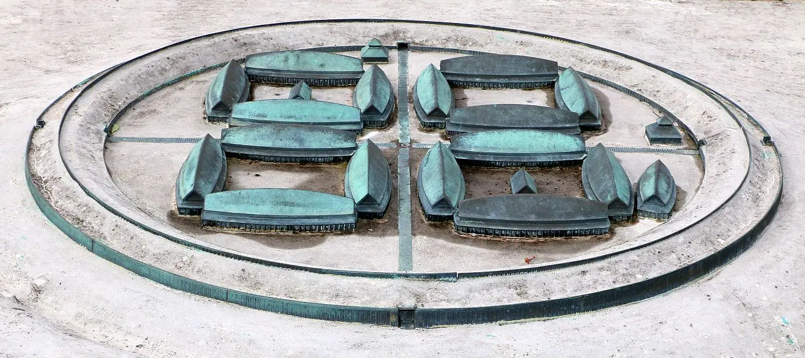
Modell der Ringburg von Trelleborg auf Seeland - eigenes Foto 28.08.2016 - Link zu einem 1.35-minütigen - ergänzt 22.09.2023
13.09.2023 - mit Ergänzungen zuletzt 10.10.2023
Über einen Urlaub an der deutschen Ostsee die Tage habe ich erfahren, dass das Museumshaus Stralsund (Katharinenkloster, Mönchstraße, 18439 Stralsund) in Stralsund aktuell geschlossen ist, gerade saniert und erst 2025 wiedereröffnet wird. Dort wird seit 2015 der originale "Goldschatz von Hiddensee" ausgestellt. Dessen Versicherungswert liegt nun übrigens bei rund 100 Millionen Euro!
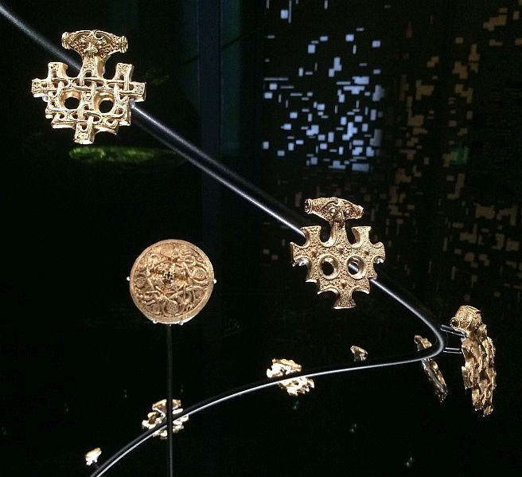
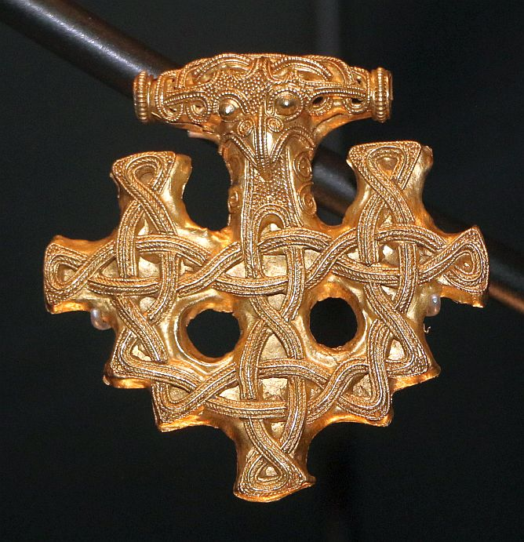
Eigene Fotos vom 31.08.2017In dem Museumshaus Stralsund wird allerdings vom 01.07.2023 bis zum 31.10.2023 eine Kopie des "Goldschatz von Hiddensee" gezeigt, die der "Förderverein Stralsund Museum e.V." im Jahr 2022 erwerben konnte. Die dort gezeigte Kopie erhielt der Vorsitzende des Staatsrates der DDR, Erich Honecker, 1973 anlässlich der Ostsee-Woche in Rostock, also vor über 50 Jahren geschenkt. Sie gelangte später durch Ankauf in Privatbesitz. Es existieren heutzutage mehrere Kopien des wohl bedeutendsten Goldschatzes der Wikingerzeit, der "Harald Blauzahn" zugeschrieben wird. Dazu gibt es einen interessanten Video (4:22 Minuten) vom 14.07.2023 der bei Stralsund TV mit dem Titel "Wikingergold-Kopie im Stralsunder Museumshaus" angeschaut werden kann. Darin kommt auch Charlotte Wenke zu Wort, die an dem u.a. Projekt beteiligt ist und die gerade ihre Dissertation zum Thema "Goldschätze als Identifikationsobjekte im Ostseeraum von 1800 bis heute" erarbeitet.
Seitens der Universität Greifswald, Interdisziplinäres Forschungszentrum Ostseeraum - IFZO, wurde in YouTube dieser tolle, die komplette Historie erklärende Video (4.13 Minuten) mit dem Titel "Der Goldschatz von Hiddensee" wohl am 14.03.2023 online gestellt. Er entstand im Zusammenhang mit der Konzeption der Unterrichtsmaterialien im Rahmen des Forschungsprojekts Wikingergold Schatzfunde als translokales Erbe und fand in Kooperation mit dem Stralsund Museum statt. Dazu wurden auch Unterlagen erarbeitet: "Wikingergold - Eine Auseinandersetzung mit kulturellem Erbe und Identitäten im Kunstunterrichtt". Weiterführende Informationen dazu - mit tollen Fotos der Schmuckstücke - können hier - Freischaltung 23.03.2023 - abgerufen werden:
https://nbn-resolving.org/urn:nbn:de:gbv:9-oa-000019-4
Literaturhinweise:
Dr. Rudolf Baier - Die vorgeschichtlichen Alterthümer des Provinzial-Museums für Neuvorpommern und Rügen in Stralsund in der Ausstellung prähistorischer Funde Deutschlands - Berlin 5. bis 21. August 1880 - Seite 38 ff.Ausgabe vom 03.07.1882 der illustrierten Damenzeitung "Der Bazar" mit einem Artikel (S. 207/208) zu den Nachbildungen des Juwelier Paul Telge zum Goldschmuck von Hiddensee.
Marc Rosenberg - Geschichte der Goldschmiedekunst auf technischer Grundlage - 1915 - Granulation - VI: Wikinger - S. 109 - 114 - Goldfund von Hiddensee - S. 111 ff.
Goldschatz von Neuendorf auf der Insel Hiddensee bei Rügen - M. Schulze-Dörlamm - Jahrbuch des Römisch-Germanischen Zentralmuseums (RGZM) - Band 38 Nr. 2 - 1991 - S. 810 bis 814 (im Jahresbericht des RGZM ...)
Technological aspects of the Viking age gold treasure from Hiddensee, Germany - - Historical Metallurgy 40 (1) - 2006 - S. 27 bis 41
Der Goldschmuck von Hiddensee. Wikingische Goldschmiedekunst mit vielen Rätseln. In: Welt-Kultur-Erbe, Heft 1/ 2009 (Stralsund 2009), 1619
Wikingergold erstrahlt im Original. Modernes Ausstellungs-Knowhow trifft mittelalterliches Kloster. In: Welt-Kultur-Erbe. Historische Altstädte Stralsund und Wismar, 2015, S. 39-42.
Wikingergoldschätze im STRALSUND MUSEUM - Ein neuer Ausstellungsabschnitt in moderner Präsentation. In: Mitteilungen des Museumsverbandes in Mecklenburg-Vorpommern e. V., 2015, S. 55-57
Edelmetallschmuck der Wikingerzeit Analysen und Interpretationen - 2016 - Heidemarie Eilbracht - dort auch die Option zum Download der Abhandlung
400-1000. Vom spätantiken Erbe zu den Anfängen der Romanik. Handbuch zur Geschichte der Kunst in Ostmitteleuropa Bd. 1 - Berlin/ München 2017 - Goldschatz von Hiddensee - Abbildung S. 503 und Text S. 542/43
Macht und Pracht bei den Wikingern -
Bildmaterial findet sich z.B. hier: "Staatliche Kunstsammlung Dresden" Online Collection zu "Paul Telge". Informationen zu seiner Person - Franz Carl Paul Telge (* 7. August 1846 - 5. Juni 1909) war ein deutscher Kunsthandwerker sowie Hofjuwelier und Hofgoldschmied des rumänischen Königspaares Karl I. und Elisabeth laut Wikipedia.
Nachtrag vom 03.10.2023:
Paul Telge - 1885 - Prähistorische Goldfunde in gesetzlich geschützten Nachbildungen - siehe darin: Der Goldfund von Hiddensöe - S. 9 bis 16
Die originalen Zeitungsartikel zu den einzelnen Schatzfunden auf Hiddensee kann man inzwischen über die Digitale Bibliothek Mecklenburg-Vorpommern im Bestand der "Stralsundische Zeitung" abrufen, diese in Ruhe durchlesen aber auch herunterladen:Ausgabe vom 22.03.1873 Nr. 69 - Deckblatt / Beitrag zum Fund
Ausgabe vom 17.03.1874 Nr. 64 - Titelblatt / Beitrag zum Fund
Ausgabe vom 17.06.1874 - Nr. 138 - Titelblatt / Beitrag zum FundZitierlink: https://www.digitale-bibliothek-mv.de/viewer/toc/PPN737081546/ - abgerufen am 03.10.2023
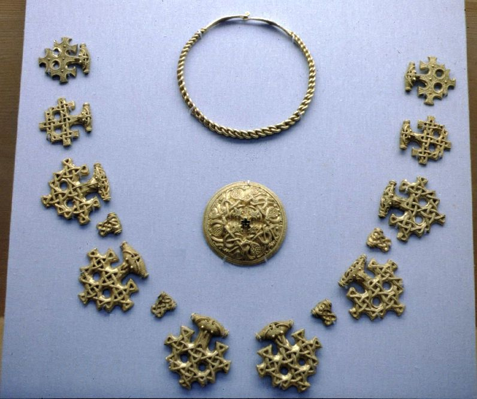
Ich bin mir nicht mehr sicher, aber dieses Foto des Original Schatzfundes müsste ich in der Ausstellung "Das Reich der Salier 1024-1125" am 27.05.1992 im Historischen Museum der Pfalz in Speyer aufgenommen haben (Vitrine 7, siehe Katalog S. 171 ff.).
29.08.2023
Heute habe ich innerhalb der Webseite von Jelling die Unterseite "Moderner Runenstein" angelegt, der in d en Jahren 2003 bis 2005 durch den Steinmetz Erik der Rote, weniger bekannt als Erik Sandquist aus Brørup aus einem ca. 3000 kg schweren Felsblock erschaffen wurde. Es war sein insgesamt 43. Runenstein, den er mit geschätzt ca. 6.000.000 Schlägen mit Hammer und Meisel und anschließender Einfärbung hergestellt hat.

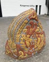
Jelling hat anlässlich der Tour der France 2022, die 3. Etappe - über 182 km von Vejle nach Sønderborg - führte direkt am Museum vorbei, einen neuen Runenstein erhalten, zu dem ich im nächsten Schritt etwas berichten will. Den habe ich selbst auch noch nicht vor Ort gesehen, aber im Internet findet man natürlich Fotos und Informationen dazu. Die Ansicht der Vorder- und der Rückseite habe ich bereits verlinkt.